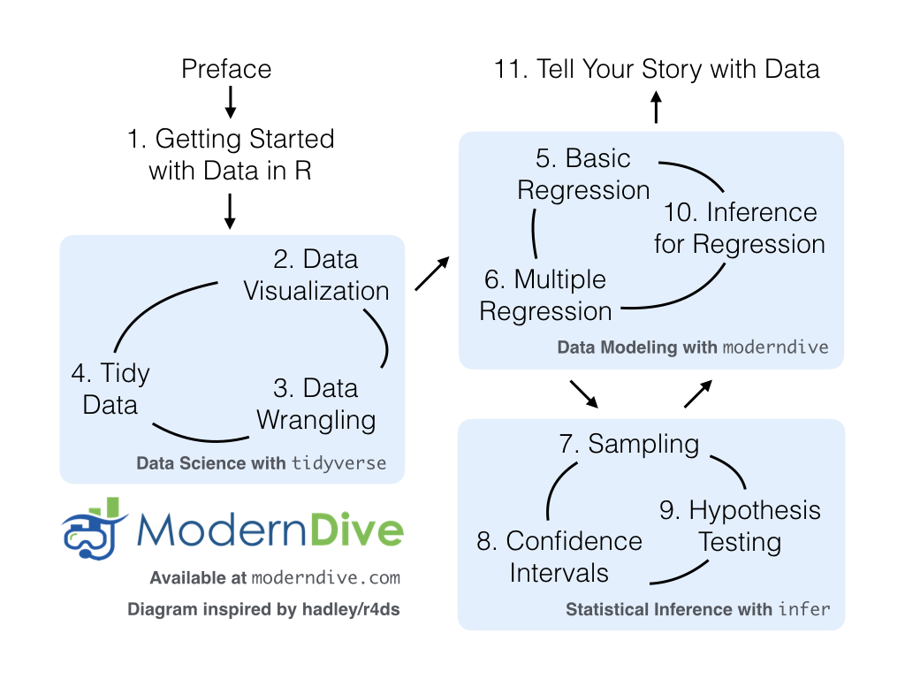
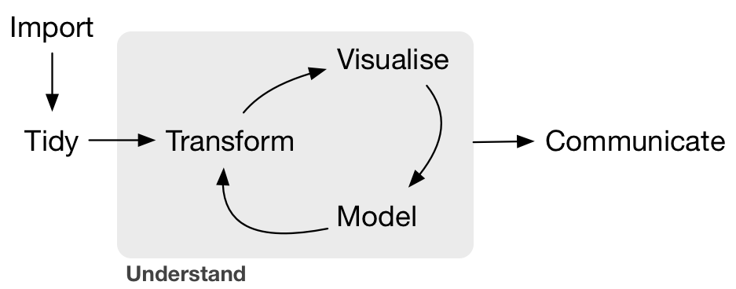
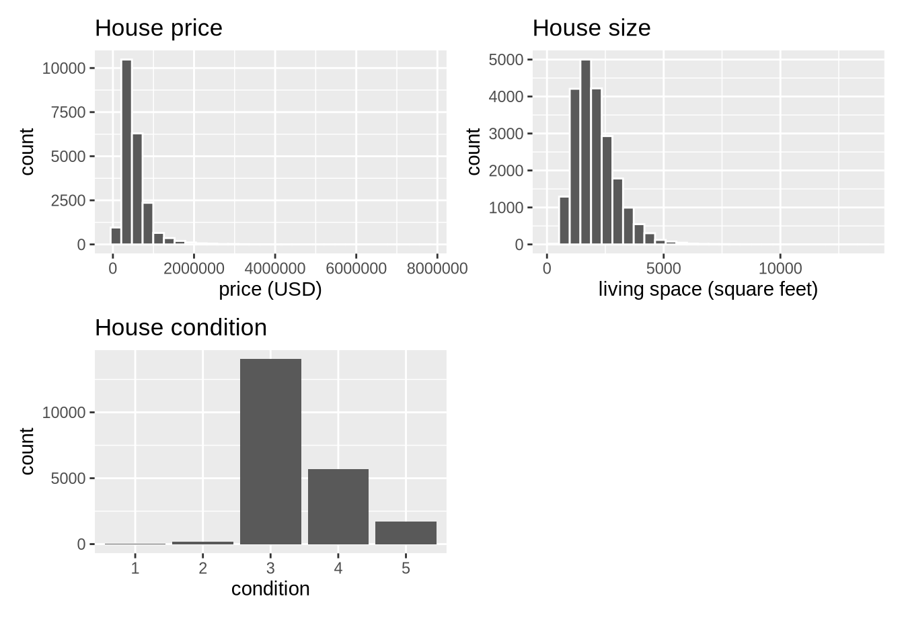
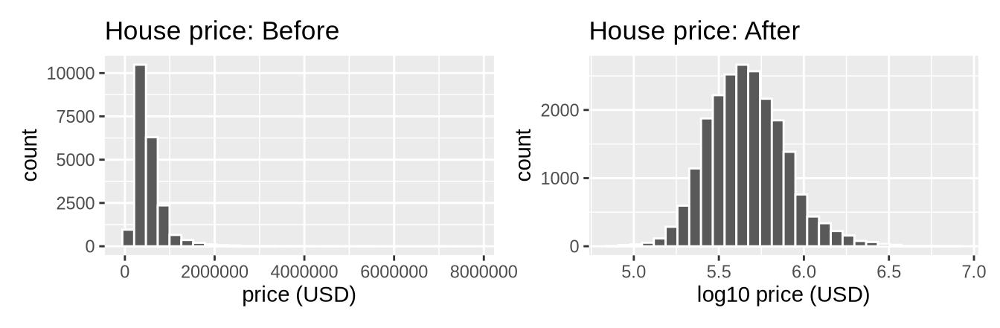
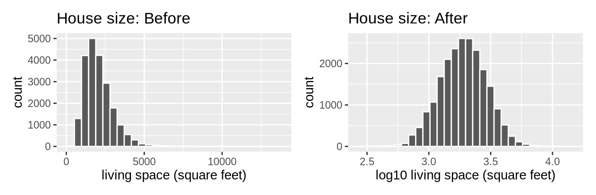
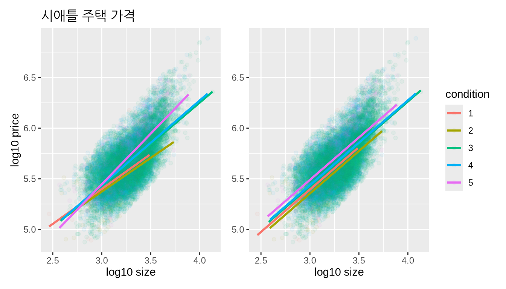
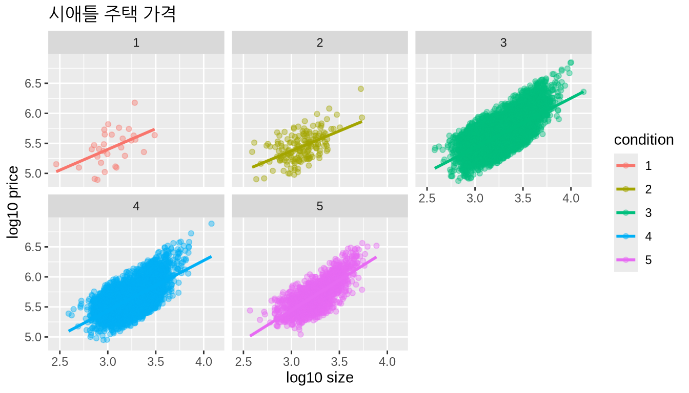
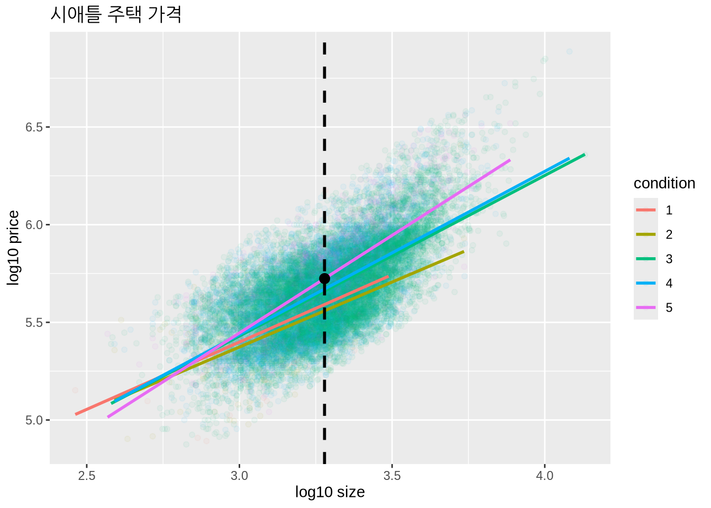
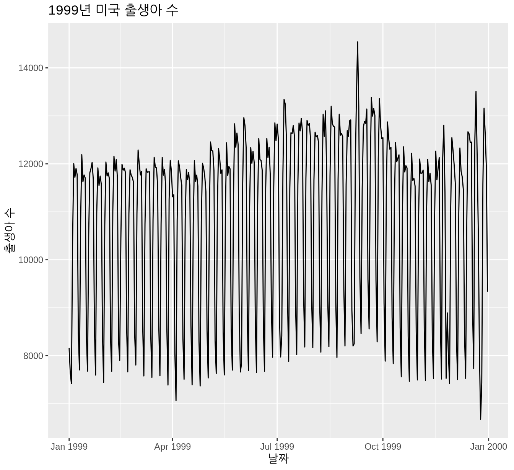

(PART) 결론
데이터로 여러분의 이야기 들려주기
이 책의 서문과 각 장의 마지막 부분에서 여러분의 여정을 보여주는 “ModernDive 플로우차트”를 보았습니다.
(ref:finalflowchart) ModernDive 플로우차트.
복습
지금까지 다룬 내용을 다시 한 번 짚어보겠습니다. 먼저 챕터 @ref(getting-started)에서 R과 RStudio의 차이점을 배우고, R 코딩을 시작하며, 첫 번째 R 패키지를 설치하고 로드하고, 여러분의 첫 번째 데이터셋인 2013년 뉴욕시 주요 공항에서 출발한 모든 국내선 flights 데이터를 탐색하며 데이터 여행을 시작했습니다. 그런 다음 이 책의 다음 세 부분을 다루었습니다(2부와 4부는 하나의 부분으로 결합되었습니다).
tidyverse를 이용한 데이터 과학. 여러분은tidyverse패키지들을 사용하여 데이터 과학 도구 상자를 조립했습니다. 구체적으로는 다음과 같습니다:- 챕터 @ref(viz):
ggplot2패키지를 사용하여 데이터를 시각화했습니다. - 챕터 @ref(wrangling):
dplyr패키지를 사용하여 데이터를 정제(wrangle)했습니다. - 챕터 @ref(tidy): 모든
tidyverse패키지의 표준화된 데이터 프레임 입력 및 출력 형식으로서 “깔끔한(tidy)” 데이터의 개념을 배웠습니다. 또한readr패키지를 사용하여 스프레드시트 파일을 R로 불러오는 방법을 배웠습니다.
- 챕터 @ref(viz):
moderndive를 이용한 데이터 모델링. 이러한 데이터 과학 도구와moderndive패키지의 도우미 함수들을 사용하여 첫 번째 데이터 모델을 적합시켰습니다. 구체적으로는 다음과 같습니다:- 챕터 @ref(regression): 하나의 설명 변수만 있는 기초 회귀 모델을 발견했습니다.
- 챕터 @ref(multiple-regression): 둘 이상의 설명 변수가 있는 다중 회귀 모델을 조사했습니다.
infer를 이용한 통계적 추론. 새로 습득한 데이터 과학 도구들을 다시 한 번 사용하여infer패키지로 통계적 추론의 실체를 파헤쳤습니다. 구체적으로는 다음과 같습니다:- 챕터 @ref(sampling): 통계적 추론에서 표집 변동(sampling variability)이 수행하는 역할과 이 표집 변동에서 표본 크기가 수행하는 역할을 배웠습니다.
- 챕터 @ref(confidence-intervals): 부트스트래핑을 사용하여 신뢰 구간을 구축했습니다.
- 챕터 @ref(hypothesis-testing): 순열(permutation)을 사용하여 가설 검정을 수행했습니다.
moderndive를 이용한 데이터 모델링(재방문): 통계적 추론에 대한 이해를 바탕으로, 챕터 @ref(regression)와 @ref(multiple-regression)에서 구축한 모델들을 재방문하고 검토했습니다. 구체적으로는 다음과 같습니다:- 챕터 @ref(inference-for-regression): 회귀 환경에서 신뢰 구간과 가설 검정을 해석했습니다.
우리는 원래 다이앤 램버트(Diane Lambert) 박사가 만든 표현인 “데이터로 생각하기(thinking with data)”의 첫 경험을 여러분과 함께해 왔습니다. 이 표현의 저변에 깔린 철학은 그림 @ref(fig:moderndive-figure-conclusion)의 플로우차트에서 여러분의 길을 안내했습니다.
이 철학은 제니퍼 브라이언(Jennifer Bryan) 박사와 해들리 위컴(Hadley Wickham) 박사가 큐레이팅한 데이터 과학 워크플로와 통계 분석의 실질적인 측면에 초점을 맞춘 프리프린트 모음인 “Practical Data Science for Stats”에도 잘 요약되어 있습니다. 그들은 다음과 같이 언급했습니다:
기존의 통계 문헌이나 커리큘럼에는 일상적인 분석 작업의 많은 측면이 거의 빠져 있습니다. 하지만 이러한 활동은 데이터 분석가와 응용 통계학자들의 시간과 노력의 상당 부분을 차지합니다. 이 모음집의 목표는 현대적인 데이터 분석 워크플로의 가시성을 높이고 채택을 촉진하는 것입니다. 우리는 산업계와 학계 사이, 소프트웨어 공학 상의 통계 및 컴퓨터 과학 사이, 그리고 서로 다른 도메인 사이에서 도구와 프레임워크의 전수를 용이하게 하는 것을 목표로 합니다.
즉, 21세기에 “데이터로 생각할” 준비를 갖추기 위해서는 분석가들이 서문에서 보았던 “데이터/과학 파이프라인”(그림 @ref(fig:pipeline-figure-conclusion)에 다시 표시됨)을 거치는 연습이 필요합니다. 너무 오랫동안 통계 교육은 이 파이프라인을 전체적으로 살펴보는 대신 일부분에만 집중해 왔다는 것이 우리의 생각입니다.

이 책을 마무리하며, 데이터를 다루는 몇 가지 추가 사례 연구를 제시해 드리겠습니다. 섹션 @ref(seattle-house-prices)에서는 미국 워싱턴주 시애틀의 주택 매매 가격을 분석하기 위해 “데이터/과학 파이프라인”을 완전히 한 번 통과해 볼 것입니다. 섹션 @ref(data-journalism)에서는 데이터 저널리즘 웹사이트인 FiveThirtyEight.com에서 가져온 효과적인 데이터 스토리텔링의 몇 가지 예를 제시해 드립니다. 이러한 사례 연구를 제시하는 이유는 여러분이 “데이터로 생각할” 수 있을 뿐만 아니라, “데이터로 여러분의 이야기를 들려줄” 수도 있어야 한다고 믿기 때문입니다. 어떻게 하는지 알아봅시다!
필요한 패키지
이 장에 필요한 모든 패키지를 로드해 보겠습니다(이미 설치했다고 가정합니다). R 패키지를 설치하고 로드하는 방법에 대한 정보는 섹션 @ref(packages)를 읽어보십시오.
library(tidyverse)
library(moderndive)
library(skimr)
library(fivethirtyeight)사례 연구: 시애틀 주택 가격
Kaggle.com은 기업, 정부 기관 및 개인이 업로드한 데이터셋을 호스팅하는 머신 러닝 및 예측 모델링 경진대회 웹사이트입니다. 그들의 데이터셋 중 하나는 “미국 킹 카운티의 주택 매매(House Sales in King County, USA)”입니다. 이 데이터셋은 그레이터 시애틀 대도시 지역을 포함하는 미국 워싱턴주 킹 카운티에서 2014년 5월부터 2015년 5월 사이에 팔린 주택의 매매 가격으로 구성되어 있습니다. 이 데이터셋은 moderndive 패키지에 포함된 house_prices 데이터 프레임에 들어 있습니다.
이 데이터셋은 21,613채의 주택과 이 주택들을 설명하는 21개의 변수로 구성되어 있습니다(이 변수들의 전체 목록과 설명은 콘솔에서 ?house_prices를 실행하여 도움말 파일을 확인하십시오). 이 사례 연구에서 우리는 다음과 같은 다중 회귀 모델을 만들 것입니다:
- 결과 변수 \(y\)는 주택의 매매 가격(
price)입니다. - 두 개의 설명 변수:
- 수치형 설명 변수 \(x_1\): 거주 공간의 면적을 평방 피트(square feet)로 측정한 주택 크기(
sqft_living)입니다. 참고로 1평방 피트는 약 0.09평방 미터입니다. - 범주형 설명 변수 \(x_2\): 주택 상태(
condition)로,1은 “불량(poor)”을 나타내고5는 “최상(excellent)”을 나타내는 5개 레벨의 범주형 변수입니다.
- 수치형 설명 변수 \(x_1\): 거주 공간의 면적을 평방 피트(square feet)로 측정한 주택 크기(
탐색적 데이터 분석: 1부
이 책 전체에서 수없이 말했듯이, 데이터가 주어졌을 때 가장 중요한 첫 번째 단계는 탐색적 데이터 분석(EDA)을 수행하는 것입니다. 탐색적 데이터 분석을 통해 데이터의 느낌을 파악하고, 데이터의 문제를 식별하며, 이상치(outlier)를 찾아내고, 모델 구축에 도움을 얻을 수 있습니다.
하위 섹션 @ref(model1EDA)에서 소개한 탐색적 데이터 분석의 공통된 세 단계를 상기해 보십시오:
- 가공되지 않은 데이터 값 살펴보기.
- 요약 통계량 계산하기.
- 데이터 시각화 만들기.
먼저, RStudio’s spreadsheet viewer를 불러오는 View()와 dplyr 패키지의 glimpse() 함수를 사용하여 가공되지 않은 데이터를 살펴보겠습니다.
View(house_prices)
glimpse(house_prices)Rows: 21,613
Columns: 21
$ id <chr> "7129300520", "6414100192", "5631500400", "2487200875", …
$ date <date> 2014-10-13, 2014-12-09, 2015-02-25, 2014-12-09, 2015-02…
$ price <dbl> 221900, 538000, 180000, 604000, 510000, 1225000, 257500,…
$ bedrooms <int> 3, 3, 2, 4, 3, 4, 3, 3, 3, 3, 3, 2, 3, 3, 5, 4, 3, 4, 2,…
$ bathrooms <dbl> 1.00, 2.25, 1.00, 3.00, 2.00, 4.50, 2.25, 1.50, 1.00, 2.…
$ sqft_living <int> 1180, 2570, 770, 1960, 1680, 5420, 1715, 1060, 1780, 189…
$ sqft_lot <int> 5650, 7242, 10000, 5000, 8080, 101930, 6819, 9711, 7470,…
$ floors <dbl> 1.0, 2.0, 1.0, 1.0, 1.0, 1.0, 2.0, 1.0, 1.0, 2.0, 1.0, 1…
$ waterfront <lgl> FALSE, FALSE, FALSE, FALSE, FALSE, FALSE, FALSE, FALSE, …
$ view <int> 0, 0, 0, 0, 0, 0, 0, 0, 0, 0, 0, 0, 0, 0, 0, 3, 0, 0, 0,…
$ condition <fct> 3, 3, 3, 5, 3, 3, 3, 3, 3, 3, 3, 4, 4, 4, 3, 3, 3, 4, 4,…
$ grade <fct> 7, 7, 6, 7, 8, 11, 7, 7, 7, 7, 8, 7, 7, 7, 7, 9, 7, 7, 7…
$ sqft_above <int> 1180, 2170, 770, 1050, 1680, 3890, 1715, 1060, 1050, 189…
$ sqft_basement <int> 0, 400, 0, 910, 0, 1530, 0, 0, 730, 0, 1700, 300, 0, 0, …
$ yr_built <int> 1955, 1951, 1933, 1965, 1987, 2001, 1995, 1963, 1960, 20…
$ yr_renovated <int> 0, 1991, 0, 0, 0, 0, 0, 0, 0, 0, 0, 0, 0, 0, 0, 0, 0, 0,…
$ zipcode <fct> 98178, 98125, 98028, 98136, 98074, 98053, 98003, 98198, …
$ lat <dbl> 47.5, 47.7, 47.7, 47.5, 47.6, 47.7, 47.3, 47.4, 47.5, 47…
$ long <dbl> -122, -122, -122, -122, -122, -122, -122, -122, -122, -1…
$ sqft_living15 <int> 1340, 1690, 2720, 1360, 1800, 4760, 2238, 1650, 1780, 23…
$ sqft_lot15 <int> 5650, 7639, 8062, 5000, 7503, 101930, 6819, 9711, 8113, …이 단계의 EDA에서 스스로에게 던져볼 수 있는 질문들은 다음과 같습니다: 어떤 변수가 수치형인가? 어떤 변수가 범주형인가? 범주형 변수의 경우, 그 레벨은 무엇인가? 우리가 회귀 모델에서 사용할 변수 외에, 주택 가격 모델에 사용하면 유용할 것 같은 다른 변수는 무엇인가?
예를 들어, condition 변수가 1부터 5까지의 값을 가지고 있지만, R에는 범주형 변수를 저장하는 방식 중 하나인 “요인(factors)”을 뜻하는 fct로 저장되어 있음에 주목하십시오. 따라서 여러분은 이것들을 수치값 1에서 5가 아니라 “라벨” 1에서 5로 생각해야 합니다.
이제 EDA의 두 번째 단계인 요약 통계량 계산을 수행해 보겠습니다. 섹션 @ref(summarize)에서 요약 통계량은 많은 수의 값을 요약하는 단일 수치값임을 배웠습니다. 요약 통계량의 예로는 평균, 중앙값, 표준 편차 및 다양한 백분위수가 있습니다.
dplyr 패키지의 summarize() 함수와 R의 내장 요약 함수인 mean(), median() 등을 사용하여 이를 수행할 수 있습니다. 하지만 섹션 @ref(mutate)에서 비행기가 공중에서 메운 시간인 gain 변수의 다양한 요약 통계량을 계산하는 다음 코드를 보았습니다.
gain_summary <- flights %>%
summarize(
min = min(gain, na.rm = TRUE),
q1 = quantile(gain, 0.25, na.rm = TRUE),
median = quantile(gain, 0.5, na.rm = TRUE),
q3 = quantile(gain, 0.75, na.rm = TRUE),
max = max(gain, na.rm = TRUE),
mean = mean(gain, na.rm = TRUE),
sd = sd(gain, na.rm = TRUE),
missing = sum(is.na(gain))
)이 과정을 price, sqft_living, condition 세 변수 모두에 대해 반복하는 것은 코딩하기가 번거로울 것입니다. 대신에, 하위 섹션 @ref(model4EDA)에서 처음 사용했던 skimr 패키지의 편리한 skim() 함수를 사용하여 우리 모델에 관심 있는 변수들만 select() 해봅시다.
house_prices %>%
select(price, sqft_living, condition) %>%
skim()Skim summary statistics
n obs: 21613
n variables: 3
── Variable type:factor
variable missing complete n n_unique top_counts ordered
condition 0 21613 21613 5 3: 14031, 4: 5679, 5: 1701, 2: 172 FALSE
── Variable type:integer
variable missing complete n mean sd p0 p25 p50 p75 p100
sqft_living 0 21613 21613 2079.9 918.44 290 1427 1910 2550 13540
── Variable type:numeric
variable missing complete n mean sd p0 p25 p50 p75 p100
price 0 21613 21613 540088.14 367127.2 75000 321950 450000 645000 7700000평균 가격(price)인 $540,088이 중앙값인 $450,000보다 큰 것을 확인해 보십시오. 이는 소수의 매우 비싼 주택이 평균을 높이고 있기 때문입니다. 즉, 우리 데이터셋에는 “이상치” 주택 가격이 존재합니다. (이 사실은 다음에 시각화를 만들 때 더욱 명확해질 것입니다.)
하지만 중앙값은 이러한 이상치 주택 가격에 민감하지 않습니다. 이것이 부동산 시장에 대한 뉴스에서 일반적으로 평균 가격이 아닌 중앙 주택 가격을 보도하는 이유입니다. 여기서 우리는 중앙값이 평균보다 이상치에 더 강건(robust)하다고 말합니다. 마찬가지로 표준 편차와 사분위수 범위(IQR)는 모두 퍼짐과 변동성의 척도이지만, IQR이 이상치에 더 강건합니다.
이제 탐색적 데이터 분석의 공통된 세 단계 중 마지막인 데이터 시각화 만들기를 수행해 보겠습니다. 먼저 단변량(univariate) 시각화를 만들어 봅시다. 이것은 한 번에 하나의 변수에만 집중하는 그래프입니다. price와 sqft_living은 수치형 변수이므로, 섹션 @ref(histograms)의 히스토그램에서 보았듯이 geom_histogram()을 사용하여 그 분포를 시각화할 수 있습니다. 반면 condition은 범주형이므로 geom_bar()를 사용하여 그 분포를 시각화할 수 있습니다. 막대 그래프에 관한 섹션 @ref(geombar)에서 상기했듯이, condition은 “미리 집계”되어 있지 않으므로 geom_col()이 아닌 geom_bar()를 사용합니다.
# Histogram of house price:
ggplot(house_prices, aes(x = price)) +
geom_histogram(color = "white") +
labs(x = "price (USD)", title = "House price")
# Histogram of sqft_living:
ggplot(house_prices, aes(x = sqft_living)) +
geom_histogram(color = "white") +
labs(x = "living space (square feet)", title = "House size")
# Barplot of condition:
ggplot(house_prices, aes(x = condition)) +
geom_bar() +
labs(x = "condition", title = "House condition")그림 @ref(fig:house-prices-viz)에서 이 세 가지 시각화를 한 번에 표시합니다.

먼저 맨 아래 그래프에서 대부분의 주택이 상태 “3”이며, 그 다음으로 “4”와 “5”가 많고 “1”이나 “2”는 거의 없음을 확인해 보십시오.
다음으로 왼쪽 상단의 price 히스토그램에서 대다수의 주택이 200만 달러 미만임을 확인해 보십시오. 또한 해당 가격에 가까운 주택이 없는 것처럼 보임에도 불구하고 x축이 800만 달러까지 늘어나 있음을 알 수 있습니다. 이는 가격이 800만 달러에 가까운 주택이 아주 소수 존재하기 때문입니다. 이들이 앞서 언급한 이상치 주택 가격입니다. 우리는 긴 오른쪽 꼬리가 나타내는 것처럼 price 변수가 오른쪽으로 치우쳐(right-skewed) 있다고 말합니다.
또한 가운데의 sqft_living 히스토그램을 보면 대부분의 주택이 5,000평방 피트 미만의 거주 공간을 가지고 있는 것으로 보입니다. 비교를 위해 미국 미식축구 경기장은 약 57,600평방 피트인 반면, 일반적인 축구 경기장은 약 64,000평방 피트입니다. 또한 이 변수 역시 price 변수만큼 극단적이지는 않지만 오른쪽으로 치우쳐 있음을 확인해 보십시오.
price와 sqft_living 변수 모두에서 오른쪽으로 치우친 특성 때문에 x축의 하단에 있는 주택들을 구별하기가 어렵습니다. 이는 매우 비싸고 거대한 크기의 극소수 주택들 때문에 x축의 눈금이 압축되어 있기 때문입니다.
그렇다면 이 치우침(skew)에 대해 무엇을 할 수 있을까요? 이 변수들에 log10 변환(log10 transformation)을 적용해 봅시다. 이러한 변환이 익숙하지 않다면 로그(log) 변환에 대한 부록 @ref(appendix-log10-transformations)를 읽어보시길 강력히 권장합니다. 요약하자면, 로그 변환을 사용하면 변수의 척도를 변경하여 가산적(additive) 변화 대신 승법적(multiplicative) 변화에 집중할 수 있습니다. 즉, 관점을 절대적 변화에서 상대적 변화로 옮겨줍니다. 이러한 승법적/상대적 변화를 자릿수(orders of magnitude) 변화라고도 합니다.
섹션 @ref(mutate)의 mutate() 함수를 사용하여 오른쪽으로 치우친 변수인 price와 sqft_living의 새로운 log10 변환 버전을 만들어 보겠습니다. 후자의 경우 log10_sqft_living이라는 이름보다 짧고 이해하기 쉬운 log10_size라는 이름을 붙이겠습니다.
house_prices <- house_prices %>%
mutate(
log10_price = log10(price),
log10_size = log10(sqft_living)
)변환 전후의 효과를 확인하기 위해 house_prices의 첫 10개 행에 대해서만 price와 sqft_living 변수의 결과를 살펴보겠습니다:
house_prices %>%
select(price, log10_price, sqft_living, log10_size)# A tibble: 21,613 × 4
price log10_price sqft_living log10_size
<dbl> <dbl> <int> <dbl>
1 221900 5.35 1180 3.07
2 538000 5.73 2570 3.41
3 180000 5.26 770 2.89
4 604000 5.78 1960 3.29
5 510000 5.71 1680 3.23
6 1225000 6.09 5420 3.73
7 257500 5.41 1715 3.23
8 291850 5.47 1060 3.03
9 229500 5.36 1780 3.25
10 323000 5.51 1890 3.28
# ℹ 21,603 more rows특히 여섯 번째와 세 번째 행의 주택들을 보십시오. 여섯 번째 행의 주택 가격(price)은 $1,225,000로, 100만 달러를 약간 상회합니다. \(10^6\)이 100만이므로 이 집의 log10_price는 약 6.09입니다.
반면 log10_price가 6보다 작은 다른 모든 주택들의 가격은 $1,000,000 미만입니다. 세 번째 행의 주택은 sqft_living이 1,000 미만인 유일한 주택입니다. \(1000 = 10^3\)이므로, log10_size가 3보다 작은 유일한 주택입니다.
이제 그림 @ref(fig:log10-price-viz)에서 price의 변환 전후 효과를 시각화해 보겠습니다.
# log10 변환 전:
ggplot(house_prices, aes(x = price)) +
geom_histogram(color = "white") +
labs(x = "price (USD)", title = "House price: Before")
# log10 변환 후:
ggplot(house_prices, aes(x = log10_price)) +
geom_histogram(color = "white") +
labs(x = "log10 price (USD)", title = "House price: After")
변환 후에는 분포의 치우침이 훨씬 덜하며, 이 경우에는 더 대칭적이고 종 모양에 가까워졌음을 알 수 있습니다. 이제 저가 주택들을 더 쉽게 구별할 수 있습니다.
주택 크기에 대해서도 마찬가지로 sqft_living 변수를 log10_size로 log10 변환하여 확인해 보겠습니다.
# log10 변환 전:
ggplot(house_prices, aes(x = sqft_living)) +
geom_histogram(color = "white") +
labs(x = "living space (square feet)", title = "House size: Before")
# log10 변환 후:
ggplot(house_prices, aes(x = log10_size)) +
geom_histogram(color = "white") +
labs(x = "log10 living space (square feet)", title = "House size: After")
그림 @ref(fig:log10-size-viz)를 보면 log10 변환이 변수의 치우침을 해결하는 데 비슷한 효과를 주는 것을 알 수 있습니다. 이 두 경우에서 결과적인 분포가 더 대칭적이고 종 모양이 되었지만, 항상 그런 것은 아니라는 점을 강조합니다.
이제 log10_price와 log10_size가 대칭적이 되었으므로, 새로운 변수들을 사용하도록 다중 회귀 모델을 수정하겠습니다.
- 결과 변수 \(y\)는 주택의 매매 가격의 로그값(
log10_price)입니다. - 두 개의 설명 변수:
- 수치형 설명 변수 \(x_1\): 상용로그를 취한 거주 공간의 면적(
log10_size)입니다. - 범주형 설명 변수 \(x_2\): 주택 상태(
condition)로, 1(불량)에서 5(최상)까지의 레벨을 가집니다.
- 수치형 설명 변수 \(x_1\): 상용로그를 취한 거주 공간의 면적(
탐색적 데이터 분석: 2부
이제 다변량(multivariate) 시각화를 만들며 EDA를 이어가겠습니다. 앞서 본 단변량 히스토그램이나 막대 그래프와 달리, 다변량 시각화는 둘 이상의 변수 사이의 관계를 보여줍니다. 모델링의 목표가 변수들 사이의 관계를 탐구하는 것이기 때문에 이는 EDA의 아주 중요한 단계입니다.
우리 모델은 수치형 결과 변수와 수치형 설명 변수 하나, 그리고 범주형 설명 변수 하나를 포함하므로, 텍스트북의 섹션 @ref(model4)에서 UT 오스틴의 강의 점수 데이터셋을 공부했던 것과 유사한 회귀 모델링 상황입니다. 당시 수치형 결과 변수는 강의 점수(score)였고, 수치형 설명 변수는 강사의 연령(age), 범주형 설명 변수는 성별(gender)이었습니다.
따라서 우리는 두 가지 모델 선택지를 가집니다. 하나는 각 condition 레벨의 회귀 직선이 서로 다른 기울기와 절편을 가지는 (1) 상호작용 모델(interaction model)이고, 다른 하나는 각 condition 레벨의 회귀 직선이 동일한 기울기를 가지지만 절편만 다른 (2) 평행 기울기 모델(parallel slopes model)입니다.
하위 섹션 @ref(model4table)에서 언급했듯이, ggplot2 패키지의 geom_smooth() 방식은 평행 기울기 모델을 그리는 편리한 방법이 없기 때문에 moderndive 패키지에 포함된 geom_parallel_slopes() 함수를 사용하여 그립니다. 그림 @ref(fig:house-price-parallel-slopes)에서 두 모델의 결과를 모두 표시하며, 왼쪽은 상호작용 모델입니다.
# 상호작용 모델 그리기
ggplot(house_prices,
aes(x = log10_size, y = log10_price, col = condition)) +
geom_point(alpha = 0.05) +
geom_smooth(method = "lm", se = FALSE) +
labs(y = "log10 price",
x = "log10 size",
title = "시애틀 주택 가격")
# 평행 기울기 모델 그리기
ggplot(house_prices,
aes(x = log10_size, y = log10_price, col = condition)) +
geom_point(alpha = 0.05) +
geom_parallel_slopes(se = FALSE) +
labs(y = "log10 price",
x = "log10 size",
title = "시애틀 주택 가격")
두 경우 모두 주택 가격과 크기 사이에 양의 관계(positive relationship)가 있음을 알 수 있습니다. 즉, 주택이 클수록 더 비싼 경향이 있습니다. 또한, 두 그래프 모두에서 condition 5인 주택의 직선이 가장 높은 곳에 위치하고, 그 뒤를 condition 4와 3이 잇는 것으로 보아 대부분의 주택 크기에서 condition 5인 주택이 가장 비싼 경향이 있음을 알 수 있습니다. condition 1과 2의 경우 이 패턴이 그리 명확하지 않습니다. 그림 @ref(fig:house-prices-viz)의 condition에 대한 단변량 막대 그래프에서 상기했듯이, condition 1 또는 2인 주택은 극소수이기 때문입니다.
그림 @ref(fig:house-price-interaction-2)에서 상호작용 모델의 분할(faceted) 버전을 보여줍니다. 이제 condition 1 또는 2인 주택이 얼마나 적은지 훨씬 더 분명하게 드러납니다.
ggplot(house_prices,
aes(x = log10_size, y = log10_price, col = condition)) +
geom_point(alpha = 0.4) +
geom_smooth(method = "lm", se = FALSE) +
labs(y = "log10 price",
x = "log10 size",
title = "시애틀 주택 가격") +
facet_wrap(~ condition)
그림 @ref(fig:house-price-parallel-slopes)의 왼쪽 그래프에 있는 상호작용 모델의 시각화와 그림 @ref(fig:house-price-interaction-2)의 분할 버전 중 어느 탐색적 시각화가 더 나을까요? 보편적인 정답은 없습니다. 여러분이 전달하고자 하는 내용에 따라 선택하고 그 선택을 고수해야 하며, 필요에 따라 두 가지를 모두 포함하고 논의하는 것도 하나의 옵션이 될 수 있습니다.
회귀 모델링
그림 @ref(fig:house-price-parallel-slopes)의 두 모델 중 어느 것이 “더 나을까요”? 왼쪽 그래프의 상호작용 모델일까요, 아니면 오른쪽 그래프의 평행 기울기 모델일까요?
우리는 하위 섹션 @ref(model-selection)의 모델 선택(model selection)에서 이와 유사한 논의를 했습니다. 추가된 복잡성이 정당화(warranted)되는 경우에만 더 복잡한 모델을 선호해야 한다고 언급했던 것을 상기해 보십시오. 이 사례의 경우, 총 5개의 절편과 5개의 기울기를 고려하는 상호작용 모델이 더 복잡한 모델입니다. 이는 5개의 절편을 고려하지만 기울기는 하나만 공통으로 고려하는 평행 기울기 모델과 대조됩니다.
상호작용 모델의 추가된 복잡성이 정당화될까요? 그림 @ref(fig:house-price-parallel-slopes)의 왼쪽 그래프를 보면, 몇몇 직선들이 약간 교차하는(x-like) 패턴을 보인다는 점에서 상호작용 모델이 정당화된다는 것이 우리의 의견입니다. 따라서 우리는 이 분석의 나머지 부분에서 상호작용 모델에만 집중할 것입니다. 하지만 이러한 시각적 접근 방식은 다분히 주관적이므로 자유롭게 반론을 제기하셔도 좋습니다! 상호작용 모델의 다섯 가지 다른 기울기와 다섯 가지 다른 절편은 무엇일까요? 회귀 표에서 이 값들을 얻을 수 있습니다. 회귀 표를 얻기 위한 두 단계 과정을 상기해 보십시오:
# 회귀 모델 적합시키기:
price_interaction <- lm(log10_price ~ log10_size * condition,
data = house_prices)
# 회귀 표 얻기:
get_regression_table(price_interaction)| term | estimate | std_error | statistic | p_value | lower_ci | upper_ci |
|---|---|---|---|---|---|---|
| intercept | 3.330 | 0.451 | 7.380 | 0.000 | 2.446 | 4.215 |
| log10_size | 0.690 | 0.148 | 4.652 | 0.000 | 0.399 | 0.980 |
| condition: 2 | 0.047 | 0.498 | 0.094 | 0.925 | -0.930 | 1.024 |
| condition: 3 | -0.367 | 0.452 | -0.812 | 0.417 | -1.253 | 0.519 |
| condition: 4 | -0.398 | 0.453 | -0.879 | 0.380 | -1.286 | 0.490 |
| condition: 5 | -0.883 | 0.457 | -1.931 | 0.053 | -1.779 | 0.013 |
| log10_size:condition2 | -0.024 | 0.163 | -0.148 | 0.882 | -0.344 | 0.295 |
| log10_size:condition3 | 0.133 | 0.148 | 0.893 | 0.372 | -0.158 | 0.424 |
| log10_size:condition4 | 0.146 | 0.149 | 0.979 | 0.328 | -0.146 | 0.437 |
| log10_size:condition5 | 0.310 | 0.150 | 2.067 | 0.039 | 0.016 | 0.604 |
우리는 하위 섹션 @ref(model4interactiontable)에서 수치형 설명 변수와 범주형 설명 변수가 모두 있을 때 회귀 표를 해석하는 방법을 이미 보았습니다. 이제 표 @ref(tab:seattle-interaction)의 estimate 열에 있는 10개 값 모두에 대해 동일한 작업을 해보겠습니다.
이 경우, 범주형 변수 condition의 “비교 기준(baseline for comparison)” 그룹은 알파벳순으로 “1”이 가장 앞에 오기 때문에 condition1 주택입니다. 따라서 intercept와 log10_size 값은 이 기준 그룹에 대한 log10_size의 절편과 기울기입니다. 그 다음으로 condition2부터 condition5 항들은 condition1 절편에 대한 절편의 차이(offsets)입니다. 마지막으로 log10_size:condition2부터 log10_size:condition5는 condition1의 log10_size 기울기에 대한 log10_size 기울기의 차이(offsets)입니다.
이 10개의 estimate 값을 사용하여 5개 회귀 직선 각각의 방정식을 써서 이를 단순화해 보겠습니다. 각 직선을 다음 형식으로 작성하겠습니다:
\[ \widehat{\log10(\text{price})} = \hat{\beta}_0 + \hat{\beta}_{\text{size}} \cdot \log10(\text{size}) \]
- 상태 1(Condition 1):
\[\widehat{\log10(\text{price})} = 3.33 + 0.69 \cdot \log10(\text{size})\]
- 상태 2(Condition 2):
\[ \begin{aligned} \widehat{\log10(\text{price})} &= (3.33 + 0.047) + (0.69 - 0.024) \cdot \log10(\text{size}) \\ &= 3.377 + 0.666 \cdot \log10(\text{size}) \end{aligned} \]
- 상태 3(Condition 3):
\[ \begin{aligned} \widehat{\log10(\text{price})} &= (3.33 - 0.367) + (0.69 + 0.133) \cdot \log10(\text{size}) \\ &= 2.963 + 0.823 \cdot \log10(\text{size}) \end{aligned} \]
- 상태 4(Condition 4):
\[ \begin{aligned} \widehat{\log10(\text{price})} &= (3.33 - 0.398) + (0.69 + 0.146) \cdot \log10(\text{size}) \\ &= 2.932 + 0.836 \cdot \log10(\text{size}) \end{aligned} \]
- 상태 5(Condition 5):
\[ \begin{aligned} \widehat{\log10(\text{price})} &= (3.33 - 0.883) + (0.69 + 0.31) \cdot \log10(\text{size}) \\ &= 2.447 + 1 \cdot \log10(\text{size}) \end{aligned} \]
이것들은 그림 @ref(fig:house-price-parallel-slopes)의 왼쪽 그래프와 그림 @ref(fig:house-price-interaction-2)의 분할 그래프에 있는 회귀 직선들에 해당합니다. 다섯 가지 상태 유형 모두에서 집의 크기가 커질수록 가격이 상승합니다. 이는 대부분의 사람들이 예상하는 바입니다. 하지만 집 크기에 따른 가격 증가율(rate of increase)은 상태가 3, 4, 5인 집에서 각각 0.823, 0.836, 1로 가장 빠릅니다. 이들은 다섯 가지 기울기 중 가장 큰 세 개의 기울기입니다.
예측하기
여러분이 부동산 중개인(realtor)이고 어떤 사람이 전화를 걸어 자신의 집이 얼마에 팔릴지 묻는다고 가정해 봅시다. 그들은 집의 상태(condition)가 5이고 크기는 1900평방 피트라고 말합니다. 그들에게 뭐라고 대답하시겠습니까? 우리가 적합시킨 상호작용 모델을 사용하여 예측해 봅시다!
먼저 그림 @ref(fig:house-price-interaction-3)에서 시각적으로 이 예측을 수행해 보겠습니다. 이 집의 예측된 log10_price는 검은색 점으로 표시되어 있습니다. 이 점은 다음 두 선이 교차하는 지점입니다:
- 상태가 5인 주택들의 회귀 직선과
log10_size가 3.28인 수직 점선. 우리의 예측 변수가 거주 공간 평방 피트를 log10 변환한 값인 \(\log10(1900) = 3.28\)이기 때문입니다.

눈대중으로 보면 예측된 log10_price는 약 5.75으로 보입니다. 이제 상태가 5인 주택들의 회귀 직선 방정식을 사용하여 예측된 정확한 수치값을 얻어 보겠습니다. 이때 먼저 평방 피트에 log10()을 취해야 함을 잊지 마십시오.
2.45 + 1 * log10(1900)[1] 5.73이 값은 앞서 시각적으로 내린 예측값인 5.75과 매우 가깝습니다. 하지만 잠깐만요! 이 집의 가격에 대한 우리 예측값이 $5.75일까요? 아닙니다! 우리는 log10_price를 결과 변수로 사용하고 있다는 점을 기억하십시오! 따라서 달러 단위의 price 예측값을 얻으려면 부록 @ref(appendix-log10-transformations)에서 설명한 대로 10의 거듭제곱을 취하여 로그를 풀어야(unlog) 합니다.
10^(2.45 + 1 * log10(1900))[1] 535493따라서 상태가 5이고 크기가 1900평방 피트인 이 집의 예측 가격은 $535,493입니다.
Learning check
(LC11.1) Repeat the regression modeling in Subsection @ref(house-prices-regression) and the prediction making you just did on the house of condition 5 and size 1900 square feet in Subsection @ref(house-prices-making-predictions), but using the parallel slopes model you visualized in Figure @ref(fig:house-price-parallel-slopes). Show that it’s $524,807!
사례 연구: 효과적인 데이터 스토리텔링
이 책을 진행하면서 여러분은 다양한 방식으로 데이터를 다루는 방법을 보았습니다. 어떤 변수 유형의 조합에 어떤 유형의 그래프가 가장 적합한지 이해함으로써 데이터를 그리는 효과적인 전략을 배웠습니다. 스프레드시트 형식으로 데이터를 요약하고 다양한 변수에 대한 요약 통계량을 계산했습니다. 또한, 표집(sampling)을 사용하여 모집단에 대한 결론을 도출하는 과정으로서 통계적 추론의 가치를 확인했습니다. 마지막으로 선형 회귀 모델을 적합시키는 방법과 모든 신뢰 구간 및 가설 검정이 타당한 해석을 갖도록 필요한 조건을 확인하는 것의 중요성을 탐구했습니다. 이 과정 전반에 걸쳐 여러분은 많은 계산 기법을 배웠고, 재현 가능한 R 코드를 작성하는 데 집중했습니다.
이제 또 다른 사례 연구 세트를 제시하겠습니다. 이번에는 전 세계의 데이터 저널리스트들이 수행한 “효과적인 데이터 스토리텔링”에 관한 것입니다. 훌륭한 데이터 스토리는 독자를 오도하지 않으며, 오히려 스토리텔링을 통해 데이터가 우리 삶에서 차지하는 중요성을 이해하도록 독자를 몰입시킵니다.
할리우드의 성별 대표성에 대한 벡델 테스트
Walt Hickey의 FiveThirtyEight.com 기사인 “할리우드의 여성 배제에 반대하는 달러와 센트의 논거(The Dollar-And-Cents Case Against Hollywood’s Exclusion of Women)”를 읽고 분석해 보시길 권장합니다. 이 기사에서 Walt는 Alison Bechdel이 만든 영화 내 성별 대표성에 대한 비공식 테스트인 벡델 테스트(Bechdel test)를 얼마나 많은 영화가 통과하는지에 대해 수십 년간의 연구를 완료했습니다.
기사를 읽으면서 Walt Hickey가 독자에게 이야기를 들려주기 위해 데이터, 그래픽 및 분석을 어떻게 사용하고 있는지 신중하게 생각해 보십시오. 재현성(reproducibility)의 정신에 입각하여 FiveThirtyEight은 이 기사에 사용한 데이터와 R 코드도 공유했습니다. 그들의 GitHub 페이지에서 더 많은 기사에 사용된 데이터를 찾을 수 있습니다.
ModernDive의 공동 저자인 Chester Ismay와 Albert Y. Kim은 Jennifer Chunn과 함께 이러한 데이터셋에 R에서 더 쉽게 접근할 수 있도록 fivethirtyeight 패키지를 만들어 한 걸음 더 나아갔습니다. fivethirtyeight 패키지에 포함된 모든 129개의 데이터셋 전체 목록은 패키지 웹페이지 https://fivethirtyeight-r.netlify.app/articles/fivethirtyeight.html를 확인하십시오.
또한, dplyr, ggplot2 및 tidyverse의 다른 패키지들을 사용하여 이러한 데이터 중 일부를 처음부터 끝까지 완전히 재현 가능하게 분석한 “비네트(vignettes)” 예시들을 여기에서 볼 수 있습니다. 예를 들어, 벡델 테스트에 관한 기사 마지막 부분에 있는 그래프 중 하나를 재현하는 방법을 보여주는 비네트는 여기에서 확인할 수 있습니다.
1999년 미국 출생아 수
fivethirtyeight 패키지에 포함된 US_births_1994_2003 데이터 프레임은 1994년부터 2003년 사이의 미국 일별 출생아 수에 대한 정보를 제공합니다. 원래 FiveThirtyEight.com 기사에 대한 링크를 포함하여 이 데이터 프레임에 대한 자세한 정보는 콘솔에서 ?US_births_1994_2003을 실행하여 도움말 파일을 확인하십시오.
항상 RStudio의 스프레드시트 View() 함수를 사용하거나 dplyr 패키지의 glimpse()를 사용하여 데이터를 미리 살펴보는 것이 좋습니다:
glimpse(US_births_1994_2003)Rows: 3,652
Columns: 6
$ year <int> 1994, 1994, 1994, 1994, 1994, 1994, 1994, 1994, 1994, 19…
$ month <int> 1, 1, 1, 1, 1, 1, 1, 1, 1, 1, 1, 1, 1, 1, 1, 1, 1, 1, 1,…
$ date_of_month <int> 1, 2, 3, 4, 5, 6, 7, 8, 9, 10, 11, 12, 13, 14, 15, 16, 1…
$ date <date> 1994-01-01, 1994-01-02, 1994-01-03, 1994-01-04, 1994-01…
$ day_of_week <ord> Sat, Sun, Mon, Tues, Wed, Thurs, Fri, Sat, Sun, Mon, Tue…
$ births <int> 8096, 7772, 10142, 11248, 11053, 11406, 11251, 8653, 791…우리는 각 날짜(date)별 출생아 수(births)에 집중하되, 1999년에 발생한 출생아만 살펴보겠습니다. 섹션 @ref(filter)에서 보았듯이 dplyr 패키지의 filter() 함수를 사용하여 이를 수행할 수 있습니다:
US_births_1999 <- US_births_1994_2003 %>%
filter(year == 1999)섹션 @ref(linegraphs)에서 논의한 바와 같이, date는 시간의 개념이므로 순차적인 순서가 있습니다. 따라서 산점도보다는 꺾은선 그래프(linegraph)가 더 적절한 시각화 방법입니다. 즉, geom_point() 대신 geom_line()을 사용해야 합니다. 이러한 그래프를 시계열(time series) 그래프라고 부른다는 것을 상기해 보십시오.
ggplot(US_births_1999, aes(x = date, y = births)) +
geom_line() +
labs(x = "날짜",
y = "출생아 수",
title = "1999년 미국 출생아 수")
2000년 1월 1일 직전에 출생아 수가 크게 급감하는 것을 볼 수 있는데, 이는 아마도 연말 연시 휴가 시즌 때문일 것입니다. 그런데 1999년 10월 1일 직전에 14,000명이 넘는 출생아가 발생한 커다란 스파이크(spike)는 무엇일까요? 이 이례적으로 높은 스파이크의 원인은 무엇일까요?
US_births_1999의 행들을 출생아 수의 내림차순으로 정렬해 보겠습니다. 섹션 @ref(arrange)에서 배웠듯이 dplyr 패키지의 arrange() 함수를 사용하여 births를 내림차순(desc)으로 정렬하면 됩니다:
US_births_1999 %>%
arrange(desc(births))# A tibble: 365 × 6
year month date_of_month date day_of_week births
<int> <int> <int> <date> <ord> <int>
1 1999 9 9 1999-09-09 Thurs 14540
2 1999 12 21 1999-12-21 Tues 13508
3 1999 9 8 1999-09-08 Wed 13437
4 1999 9 21 1999-09-21 Tues 13384
5 1999 9 28 1999-09-28 Tues 13358
6 1999 7 7 1999-07-07 Wed 13343
7 1999 7 8 1999-07-08 Thurs 13245
8 1999 8 17 1999-08-17 Tues 13201
9 1999 9 10 1999-09-10 Fri 13181
10 1999 12 28 1999-12-28 Tues 13158
# ℹ 355 more rows출생아 수가 가장 많은 날(14,540명)은 사실 1999년 9월 9일입니다. 이 날짜를 미국 표준 형식인 월/일/년 형식으로 써보면, 출생아 수가 가장 많은 날은 9/9/99입니다! 온통 9뿐입니다! 부모들이 의도적으로 이 날짜에 맞춰 더 높은 비율로 분동을 유도했을 가능성이 있을까요? 그럴 수도 있겠죠? 원인이 무엇이든, 이 사실은 재미있는 이야기가 됩니다!
학습 확인(Learning check)
(LC11.2) 1994년과 2003년 사이에 미국에서 출생아 수가 가장 적은 날짜는 언제인가요? 그 원인에 대해 어떤 이야기를 들려줄 수 있을까요?
데이터로 생각하고, 여러분의 이야기를 더 들려줄 시간입니다! 통계적 모델링이 여기서 어떤 도움이 될 수 있을까요? 어떤 종류의 통계적 추론이 유용할까요? 또 무엇을 찾을 수 있으며 이 분석을 어디까지 확장할 수 있을까요? 이 분석에서 여러분은 어떤 가정을 했나요? 이러한 질문들은 독자 여러분이 직접 탐구하고 검토해 볼 수 있도록 남겨두겠습니다.
서문에 있는 저희 연락처를 통해 저희에게 연락해 주십시오. 여러분이 어떤 결과물을 만들어낼지 정말 기대됩니다!
https://moderndive.com/labs에서 추가적인 문제 세트와 실습(labs)도 확인해 보시기 바랍니다.
R 코드 스크립트
이 장에서 사용된 모든 R 코드의 R 스크립트 파일은 여기에서 이용 가능합니다.
책 전체에 걸쳐 모든 관련 장들에 대해 *.R 파일로 저장된 R 코드 파일들이 다음 표에 정리되어 있습니다.
| chapter | link |
|---|---|
| 1 | https://moderndive.com/scripts/01-getting-started.R |
| 2 | https://moderndive.com/scripts/02-visualization.R |
| 3 | https://moderndive.com/scripts/03-wrangling.R |
| 4 | https://moderndive.com/scripts/04-tidy.R |
| 5 | https://moderndive.com/scripts/05-regression.R |
| 6 | https://moderndive.com/scripts/06-multiple-regression.R |
| 7 | https://moderndive.com/scripts/07-sampling.R |
| 8 | https://moderndive.com/scripts/08-confidence-intervals.R |
| 9 | https://moderndive.com/scripts/09-hypothesis-testing.R |
| 10 | https://moderndive.com/scripts/10-inference-for-regression.R |
| 11 | https://moderndive.com/scripts/11-tell-your-story-with-data.R |
맺음말
이제 이 책의 여기까지 오셨으니, 여러분은 R에서 데이터를 다루는 방법에 대해 꽤 많은 것을 알고 계실 것입니다! 또한 통계적 추론을 위해 시뮬레이션 기반 기법을 사용하는 방법과 이러한 기법이 \(t\)-검정과 같은 전통적인 이론 기반 추론 방법에 대한 직관을 기르는 데 어떻게 도움이 되는지에 대해서도 많은 지식을 얻으셨습니다.
우리는 여러분이 데이터 전처리(data wrangling), 데이터 정리(tidying), 데이터 시각화, 데이터 모델링 및 통계적 추론과 같은 모든 측면에서 데이터의 힘을 깨닫게 되기를 바랍니다. 저희의 의견으로는 이 모든 것이 중요하지만, 시민 데이터 과학자나 전문 데이터 과학자가 갖춰야 할 가장 중요한 도구는 데이터 시각화일 것입니다. 여러분이 독자가 명확하게 이해할 수 있는 방식으로 정보를 표시하는 진정으로 아름다운 그래픽을 만들 수 있다면, 여러분은 데이터로 이야기를 들려주는 강력한 힘을 갖게 된 것입니다. 이러한 기술들이 앞으로 여러분이 데이터로 멋진 이야기를 들려주는 데 도움이 되기를 바랍니다. R과 tidyverse를 사용하여 현대적인 데이터 분석의 세계에 뛰어든 이 여정에 함께해 주셔서 감사합니다!